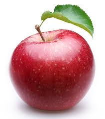
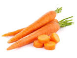

|  |
APPLEDelicious and crunchy, apple fruit is one of the most popular and favorite fruits among the health conscious, fitness lovers who firmly believe in the concept of “health is wealth.” This wonderful fruit indeed packed with rich phytonutrients that in the real sense indispensable for optimal health and wellness. Certain antioxidants in apples have health promoting and disease prevention properties, Apples have Vitamin A, Vitamin B1, Vitamin B2, Vitamin B6, Vitamin C and Folate (folic acid) |
|
BANANABananas are one of the most widely consumed fruits in the world.Bananas are rich in potassium and fiber. They may help prevent asthma, cancer, high blood pressure, diabetes, cardiovascular disease, and digestive problems. |
|
CARROT The health benefits of carrots include reduced cholesterol, lower risk of heart attacks, prevention of certain cancers, improved vision, and reduced signs of premature aging. Furthermore, carrots have the ability to improve the skin, boost the immune system, improve digestion, protect cardiovascular health, detoxify the body, and boost oral health in a variety of ways Most of the benefits of carrots can be attributed to their beta-carotene and fiber content. These root vegetables are also a good source of antioxidants. Furthermore, they are rich in vitamin A, C, K, and B8, as well as pantothenic acid, folate, potassium, iron, copper, and manganese. | |
DATES
|
Back to list |